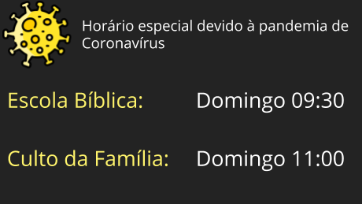

Horário dos Cultos

Devido à pandemia de Coronavírus nós estamos realizando nossos cultos presenciais em horários especiais. A Escola Bíblica Dominical (EBD) acontece todo domingo às 09:30. Já o Culto da Família é realizado logo após a EBD às 11:00. Estamos realizando os cultos com toda segurança. Distanciamento entre os participantes. Álcool gel espalhado por toda a igreja e uso obrigatório de máscaras.